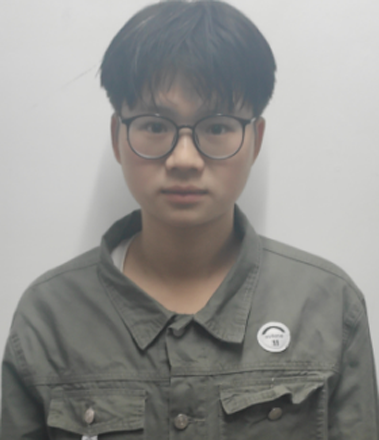
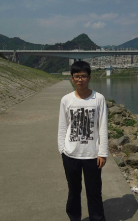
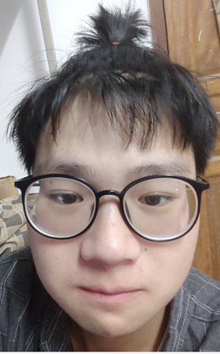

二零
一五年暑假的自己
姓名:张人中
性别:男
就读大学:重庆师范大学
专业:计算机科学与技术
电话:15123787847
qq:1450304792
email:1450304792@qq.com
家乡：重庆市彭水县

剖析自我:我觉得自己是一个慢热型的人，外表冷，内心炽热。自我感
觉比较沉着冷静，做什么事情都会先考虑清楚后果再行动。热心肠，喜欢帮助别人。也喜欢观察人间，不断丰富自我，让自我
精神世界不断完善。 爱好：我喜欢游泳，家住郁江旁边，所以从六岁就开始游泳了，
每年暑假几乎每天都泡在河里游泳。喜欢打羽毛球，一想到打羽毛球，就想到了我的高中时代，冬天打羽毛球穿短袖（怕热出汗），劳逸结合嘛，所以高中是打羽毛球打过来的。 性格：比较温顺，喜欢安静一点的环境，
有一些些内向，可能是因为小时候的缘故吧，父母为生计奔波，所以说暑假自己一个人在家里生活，在生活方面独立能力很强。
大学：大一大二努力学好本专业知识的的同时，并加强各方面素质的提高。学会与人交流，
加强与人合作的精神，加强团体意识。大三大四，多接触社会，积极锻炼，加强动手能力，勤于实践。努力为未来奋斗！
未来职业规划：目前大概方向有几个方向，刚大一还不太确定。可能未来的方向：响应式网站制作、JAVA程序制
作、游戏开发技术、网站建设与维护、网络安全技术等等...我知道我学的计算机专业，以后肯定跟此专业有关工作。我肯
定做事上进，做事起来得心应手，成为一名优秀的程序员，牛逼的计算机高手。既然选择了做计算机人，那么就在这条路上一直坚守下去吧！
这是属于我和重师的视频，里面有正校门，三春湖，情人坡，图书馆以及里面的空间,专门给网页制作录的一个视频。